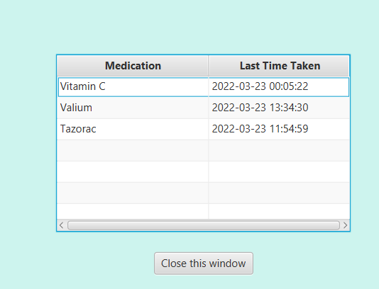

We want to take-out all of the stress for the patient, so an history will be available to see if he took all the medication.
Historic
We can see what medication has been take by the elders in real time, impossible to forget if you took the medication or not !